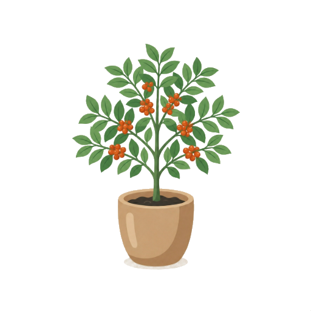

Two axes, not one
These don’t compete once you separate what they mean. A variety is which plant you own — identity, permanent, educational. A treatment is what light it’s standing in — mood, seasonal, cheap. Five varieties × three treatments is fifteen groves from eight items.
Variety — the plant itself
Five real botanicals with genuinely different silhouettes: Typica’s tiered horizontal branches, Geisha’s lanky sparse frame, Robusta’s broad bushy leaf, Liberica’s huge leathery paddles. This is the only version that reads as different at 64×64 in the Studio door without relying on hue, which also makes it the only version that works for colour-blind users and in both moods.
Treatment — the light on it
Keep it, cut it from five to three, and stop calling them plants. Golden Hour, Moonlit, First Frost applied over whatever variety you own — the filters already work, they cost nothing, and as a modifier they’re honest. As a standalone “plant” they were pretending to be something they aren’t.
“Typica vs Arabica vs Robusta” isn’t a parallel list — Typica is an Arabica. Arabica and Robusta are species; Typica, Bourbon and Geisha are varieties within Arabica. In an app that teaches coffee, shipping that mix-up in a picker would be the most visible factual error in the product. The two-line card below solves it by design: species eyebrow on top, variety name underneath. The picker then teaches the taxonomy instead of muddling it.
Three Arabica varieties, two other species
Chosen for maximum silhouette contrast first, real-world fame second. Art below is the current single tree asset standing in as a layout placeholder — the whole point of the proposal is that these five would not look alike.

art · tall, tiered branchesTypica
- Origin
- Yemen → the world
- Altitude
- High
- Cup
- Clean, sweet
Bourbon
- Origin
- Réunion
- Altitude
- High
- Cup
- Sweet, complex
Geisha
- Origin
- Ethiopia · Panama
- Altitude
- Very high
- Cup
- Jasmine, bergamot
Robusta
- Origin
- West Africa · Vietnam
- Altitude
- Low
- Cup
- Bold, cocoa, bitter
Liberica
- Origin
- Philippines · Malaysia
- Altitude
- Low
- Cup
- Smoky, jackfruit
Own a plant, choose its light
The Studio door goes from one row to two: Grove (which plant) and Light (how it’s lit). The second row is the existing filter code, reduced and renamed.
The chooser, restructured
Same grid, richer card. Species eyebrow → variety name → latin binomial → three-row spec strip → one-line botanical tell. That is already the Dictionary entry format, so the picker can reuse the dictionary card component and each plant can deep-link to its real term. A cosmetic that opens into curriculum is worth far more than a cosmetic that opens into nothing.
Growth still runs all ten stages, seed to harvest. The variety changes what the ten stages look like, never how many there are — so Coffee Tree.html’s stage logic and the module milestones don’t move.
Light — three, not five
| Treatment | Reads as | Cost |
|---|---|---|
| Golden Hour | Late afternoon sun | filter |
| Moonlit | Cool night | filter |
| First Frost | Cold morning | filter |
| Daylight | Default, no filter | — |
Dropped: Verdant (indistinguishable from default) and Ashen-style desaturation (reads as a bug, or as a dead plant — the last thing a growth mechanic should suggest).
The honest art number, and how to not pay it all at once
This is the only real argument against varieties, so it deserves the real figure rather than a hopeful one.
| Approach | Frames | Notes |
|---|---|---|
| Today — filters | 10 | One plant, five hues. Free, and the reason the skins feel thin. |
| Naïve varieties | 50 | Five plants × ten stages, all bespoke. Correct and unaffordable. |
| Shared early stages | 38 | Stages 1–3 — bare soil, sprout, two-leaf seedling — are near-identical across varieties in life. Share them, diverge from stage 4 where leaf shape and branching first read. Cuts a fifth of the work with no perceived loss. |
| Staged rollout — recommended | 3 + 2×7 | Ship Typica (retag the art you already have) and Robusta (the most visibly different plant) at 17 frames. That’s the whole idea proven. Then one variety per season as live-ops. |
A variety drop is a recurring Plus beat — “Geisha arrives this month” is something you can put in a push notification, on the paywall, and in the store screenshots. Recolours are not: nobody resubscribes for a fourth hue. So the art spend buys retention cadence, not just prettier trees. That reframes it from a cosmetic cost into the cheapest content pipeline the app has.